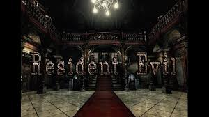
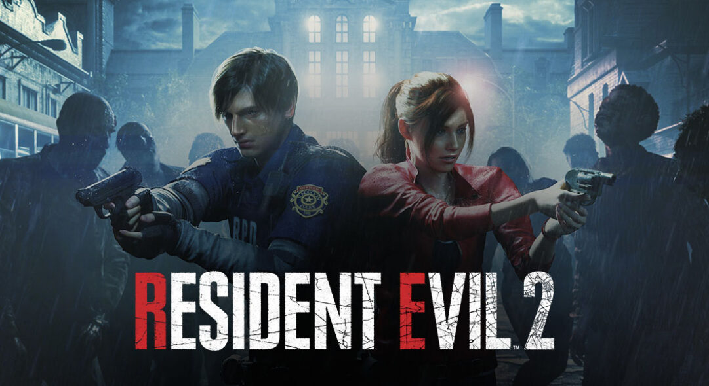
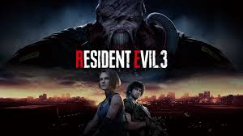

Catálogo de Juegos (Registros)
Los incidentes registrados por nuestro sistema de vigilancia global están catalogados por eventos históricos (Juegos de la Saga Principal).

Resident Evil (Remake)
El Incidente de la Mansión Arklay. El Equipo Alpha de S.T.A.R.S.
descubre los horrores del Virus-T por primera vez en las montañas de Raccoon City.
Fecha del incidente: Julio de 1998.

Resident Evil 2 (Remake)
El brote biológico a gran escala. La ciudad colapsa bajo el peso del
Virus-G de William Birkin y oleadas de muertos vivientes.
Fecha del incidente: Septiembre de 1998.

Resident Evil 3 (Remake)
El final de la saga de Jill Valentine. La ciudad de Raccoon City cae
bajo el ataque del Virus-G y su población es convertida en muertos vivientes.
Fecha del incidente: Sept. - Octubre de 1998.

Resident Evil 4 (Remake)
Misión de rescate en un pueblo remoto de España liderado por Los
Iluminados, donde el parásito Las Plagas domina a sus habitantes.
Fecha del incidente: Otoño de 2004.